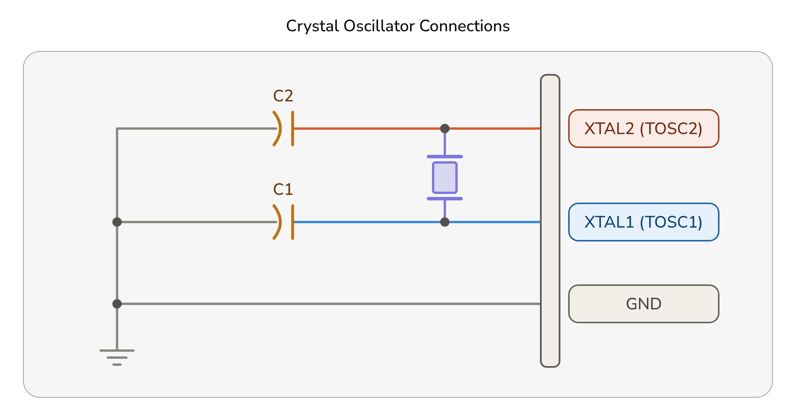

SISTEMAS DE RELOJ Y OPCIONES
1. SISTEMAS DE RELOJ Y SU DISTRIBUCIÓN
La Figura 9-1 detalla los subsistemas de reloj en el AVR y cómo se distribuyen entre ellos. No es necesario que todas las fuentes de reloj estén activas en un momento dado. La flexibilidad de la arquitectura del reloj ayuda a reducir el consumo de energía al conectar únicamente los subsistemas de reloj periféricos necesarios para la aplicación en ejecución, tal como se describe en ”Power Management and Sleep Modes”.

1.1. Reloj de la CPU (CPU Clock) – clkCPU
El reloj de la CPU se encarga de dirigir los circuitos principales del núcleo (core), los cuales operan en los registros de trabajo de propósito general (general purpose working registers), la unidad lógica aritmética (ALU) y la memoria de datos (SRAM). El acceso a la memoria Flash y a la EEPROM también depende del reloj de la CPU.
1.2. Reloj de E/S (I/O Clock) – clkI/O
El reloj de E/S se utiliza para la mayoría de los periféricos, tales como los temporizadores/contadores (Timer/Counters), la interfaz serial universal (USART), la interfaz periférica serial (SPI) y el convertidor analógico-digital (ADC). El reloj de E/S también es utilizado por el subsistema de interrupciones externas (external interrupts).
Nota: Para minimizar el consumo de energía en los modos de suspensión (sleep modes), el reloj de E/S puede detenerse para determinados periféricos.
1.3. Reloj de Flash (Flash Clock) – clkFLASH
El reloj de Flash controla la interfaz del bus de la memoria Flash (Flash memory bus interface). El reloj de Flash opera normalmente al mismo ritmo que el reloj de la CPU (clkCPU).
1.4. Reloj Asíncrono (Asynchronous Clock) – clkASY>
El reloj asíncrono permite que determinados periféricos (como el Temporizador/Contador2) operen de forma independiente del reloj principal de la CPU (clkCPU). Esto es especialmente útil cuando se utiliza un oscilador externo de baja frecuencia (como un cristal de reloj de 32.768 kHz) para el conteo en tiempo real (RTC).
1.5. Reloj del ADC (ADC Clock) – clkADC
El convertidor analógico-digital (ADC) cuenta con su propio reloj dedicado para permitir la conversión de señales analógicas mientras el reloj de E/S se encuentra detenido o ralentizado (por ejemplo, en el modo de reducción de ruido del ADC - ADC Noise Reduction Mode).
2. FUENTES DE RELOJ (CLOCK SOURCES)
El dispositivo cuenta con varias opciones de fuentes de reloj para el oscilador principal (main oscillator), las cuales se seleccionan mediante los bits de los fusibles (fuse bits) de la memoria de configuración. Aquí se encuentra la tabla de configuración de los bits de fusible para las opciones de fuente de reloj (Clock Options)
| Opción de Reloj del Dispositivo (Device Clocking Option) | CKSEL3...0 |
|---|---|
| Oscilador de Cristal de Baja Potencia (Low Power Crystal Oscillator) Optimizado para cristales de cuarzo estándar de 400 kHz a 16 MHz (o hasta 20 MHz dependiendo del voltaje y modelo) |
1111 - 1000 |
| Oscilador de Cristal de Oscilación Completa (Full Swing Crystal Oscillator) | 0111 - 0110 |
| Oscilador de Cristal de Baja Frecuencia (Low Frequency Crystal Oscillator) | 0101 - 0100 |
| Oscilador RC Interno de 128kHz (Internal 128kHz RC Oscillator) Un oscilador interno de baja potencia y baja frecuencia utilizado principalmente por el temporizador perro guardián (Watchdog Timer - WDT) y durante el arranque (start-up) |
0011 |
| Oscilador RC Interno Calibrado (Calibrated Internal RC Oscillator) Proporciona una frecuencia de 8 MHz (con calibración de fábrica configurable a otras frecuencias mediante el registro OSCCAL) |
0010 |
| Reloj Externo (External Clock) Entrada de señal de reloj digital externa aplicada directamente en los pines XTAL1 y XTAL2.
|
0000 |
| Reservado (Reserved) | 0001 |
|
Nota: Device Clocking Options Select(1) 1. Para todos los fusibles, "1" significa no programado (unprogrammed) mientras que "0" significa programado (programmed). |
|
2.1. Fuente de Reloj por Defecto
El dispositivo se suministra de fábrica con el oscilador RC interno (internal RC oscillator) a 8.0 MHz y con el fusible CKDIV8 programado , lo que resulta en un reloj del sistema (system clock) de 1.0 MHz. El tiempo de arranque (startup time) se configura al máximo y el período de tiempo de espera (time-out period) se habilita (CKSEL = "0010", SUT = "10", CKDIV8 = "0"). Esta configuración por defecto garantiza que cualquier usuario pueda establecer la configuración de la fuente de reloj deseada utilizando cualquier interfaz de programación disponible.
2.2. Secuencia de Arranque del Reloj (Clock Startup Sequence)
Cualquier fuente de reloj necesita un voltaje VCC suficiente para comenzar a oscilar y un número mínimo de ciclos de oscilación antes de que pueda considerarse estable.
Para asegurar un VCC suficiente, el dispositivo emite un reset interno con un retraso de tiempo de espera (tTOUT) después de que el reset del dispositivo sea liberado por todas las demás fuentes de reset. La sección “System Control and Reset” describe las condiciones de inicio para el reset interno. El retraso (tTOUT) es temporizado a partir del oscilador del Perro Guardián (Watchdog Oscillator) y el número de ciclos en el retraso se configura mediante los bits de fusible SUTx y CKSELx. Los retrasos seleccionables se muestran en la Tabla siguiente. La frecuencia del oscilador del Perro Guardián depende del voltaje, tal como se muestra en “Typical Characteristics – (TA = -40°C a 85°C)” .
| Tiempo de espera típico (Typ Time-out VCC = 5.0V) |
Tiempo de espera típico (Typ Time-out VCC = 3.0V) |
Número de ciclos (Number of Cycles) |
|---|---|---|
| 0 ms | 0 ms | 0 |
| 4.1 ms | 4.3 ms | 512 |
| 65 ms | 69 ms | 8K (8,192) |
El propósito principal del retardo (
Se requiere que el oscilador oscile durante un número mínimo de ciclos antes de que el reloj se considere estable. Un contador de rizo interno (
La secuencia de arranque del reloj incluye tanto el retardo de tiempo de espera como el tiempo de arranque cuando el dispositivo se inicia desde el estado de
3. OSCILADOR DE CRISTAL DE BAJA POTENCIA (Low Power Crystal Oscillator)
Los pines XTAL1 y XTAL2 son la entrada y la salida, respectivamente, de un amplificador inversor (inverting amplifier) que puede configurarse para su uso como un oscilador en el chip (On-chip Oscillator), tal como se muestra en la figura adjunta. Se puede utilizar tanto un cristal de cuarzo (quartz crystal) como un resonador cerámico (ceramic resonator).

Este oscilador de cristal es un oscilador de baja potencia (low power oscillator), con una oscilación de voltaje reducida (reduced voltage swing) en la salida XTAL2. Proporciona el menor consumo de energía (power consumption), pero no es capaz de controlar otras entradas de reloj (clock inputs) y puede ser más susceptible al ruido en entornos ruidosos (noisy environments). En estos casos, consulte la sección «Oscilador de Cristal de Oscilación Completa» (Full Swing Crystal Oscillator) en la página 39.
C1 y C2 deben ser siempre iguales tanto para los cristales como para los resonadores. El valor óptimo de los condensadores depende del cristal o resonador en uso, de la cantidad de capacitancia parásita (stray capacitance) y del ruido electromagnético del entorno. En la Tabla 9-3 de la página 39 se ofrecen algunas directrices iniciales para elegir los condensadores que se utilizarán con los cristales. Para los resonadores cerámicos, se deben utilizar los valores de los condensadores indicados por el fabricante.